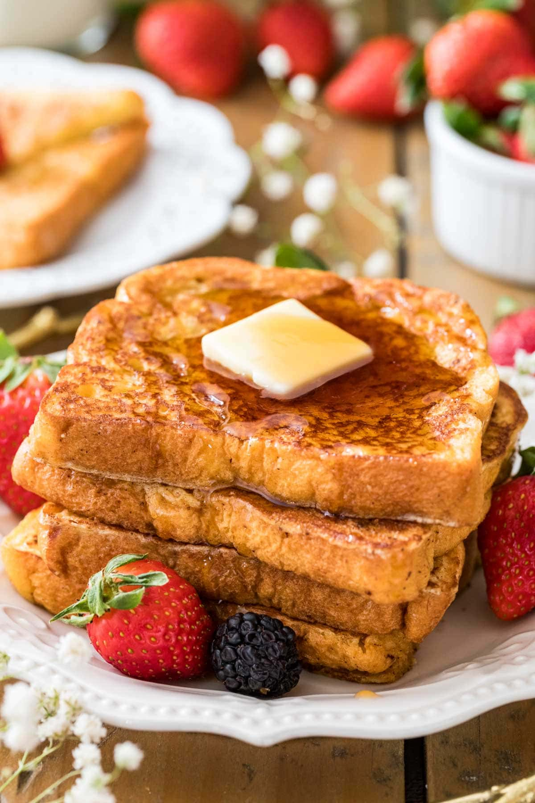

French Toast

Description
The perfect contrast between crunchy and custardy...made even better when topped off
with berries and whipped cream or the faithful staple of butter and
maple syrup.
Ingredients
- 12 slices soft white bread
- 2 cups whole milk
- 6 eggs
- 1/4 cup granulated sugar
- 1/2 tsp vanilla
- a pinch of salt
- a dash of cinnamon
- a dash of nutmeg
- butter for greasing the pan
Steps
- Heat a frying pan or griddle over medium heat.
- Whisk together the milk, eggs, sugar, vanilla, salt, cinnamon,
and nutmeg.
- Dip each slice of bread into the egg and milk mixture to saturate.
- Grease the pan or griddle with butter.
- Cook the slices of bread until browned, then slip to cook other side.
- If desired, keep cooked toast slices warm in a 200 degrees F oven.
- Serve with desired toppings.